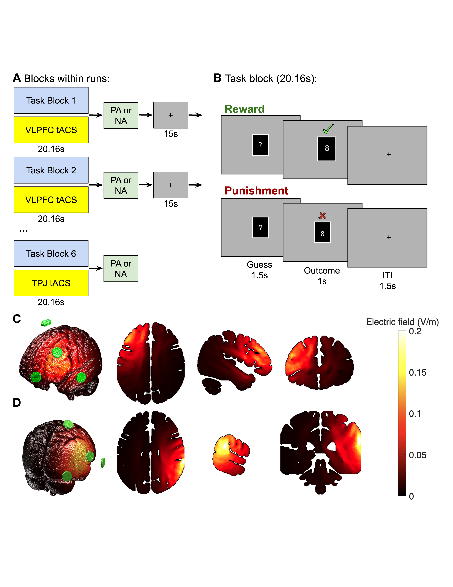
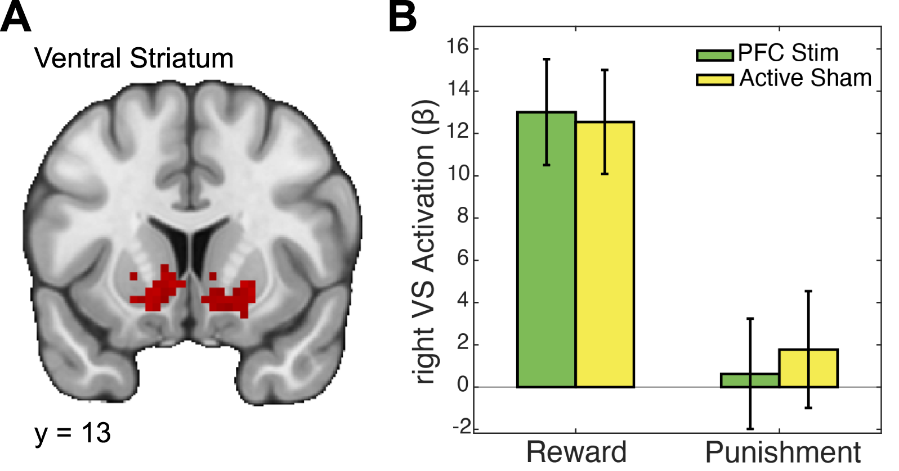
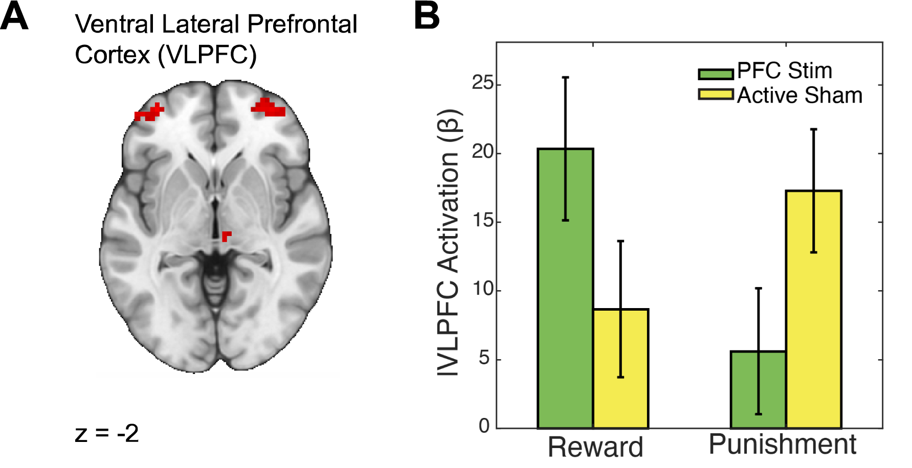
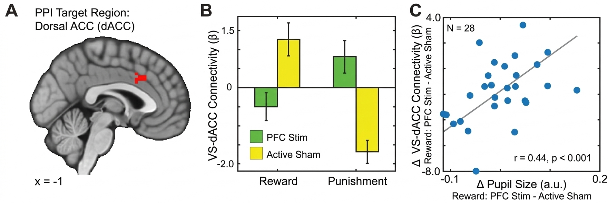

α-tACS modulates reward-dependent pupil responses and corticostriatal connectivity
Abstract
Introduction: Noninvasive brain stimulation can help clarify the neural basis of reward processing and potentially inform treatments for disorders involving reward dysfunction. However, widely used methods such as transcranial magnetic and electrical stimulation cannot directly stimulate deep-brain regions like the striatum. Here, we tested whether stimulating the ventrolateral prefrontal cortex (VLPFC)—a cortical region strongly connected to the striatum—could indirectly influence reward-related neural and physiological responses.
Methods: In a within-subjects design, participants performed a card-guessing task involving monetary rewards for correct guesses and punishments for incorrect guesses. During the task, participants underwent functional magnetic resonance imaging (fMRI) and pupillometry while receiving concurrent 10 Hz transcranial alternating current stimulation (α-tACS). Stimulation targeted either the VLPFC or a control region (temporoparietal junction). We measured pupil dilation, brain activation (BOLD signal), and functional connectivity between the ventral striatum and dorsal anterior cingulate cortex (VS-dACC).
Results: VLPFC stimulation increased pupil size during reward and punishment outcomes, indicating greater physiological arousal. At the neural level, α-tACS enhanced VLPFC activation during reward and suppressed its responses during punishment. Stimulation also changed VS-dACC connectivity in a context-dependent manner. Importantly, stimulation-driven increases in pupil size during reward correlated positively with stimulation-induced changes in VS-dACC connectivity. Exploratory moderated mediation analyses suggested that stimulation influenced the degree to which striatal responses mediated the relationship between task outcomes and pupil size changes.
Conclusions: Targeting VLPFC with α-tACS modulates local cortical activity and corticostriatal networks during reward processing, providing a promising noninvasive approach to influence reward circuitry.
Figures



